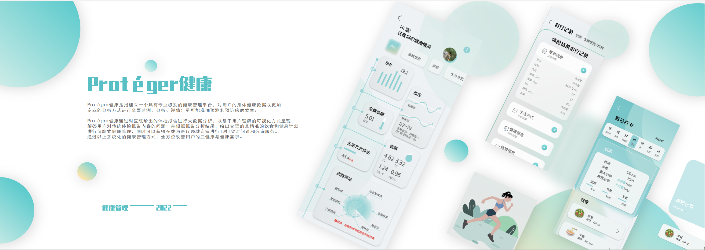

2021
Protéger
Health
A professional health management platform connecting health data, personalised recommendations and long-term health management.
Protéger
Health
一个连接健康数据、个性化建议 与长期健康管理的专业健康管理平台。

NEXT PROJECT →
下一个项目 →